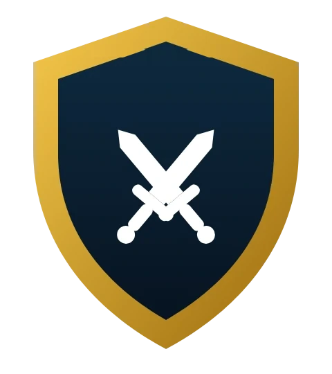
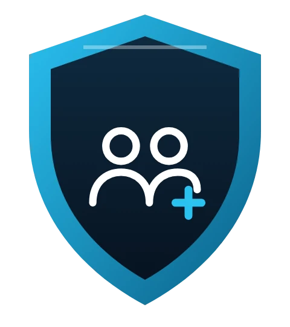
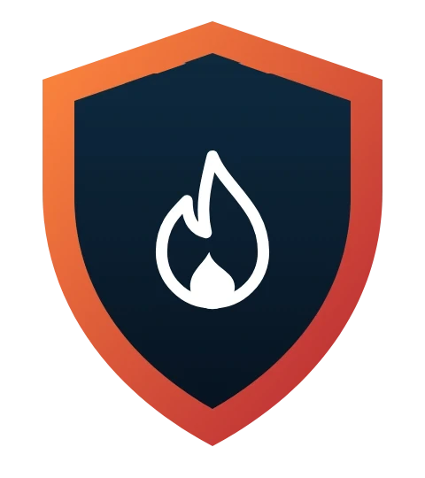

Su anfitrión de hoy
BIENVENIDOS
AL TRAINING
Anfitrión: por confirmar
«Hoy no vamos a hablar de empezar. Vamos a hablar de terminar.»
Action Leaders Training · 22 nov
LIDERA · FORMA · IMPACTA · TRASCIENDE
Tema de hoy · Mentalidad y liderazgo
La motivación lo hace empezar. La identidad lo hace terminar.
Su anfitrión de hoy
«Hoy no vamos a hablar de empezar. Vamos a hablar de terminar.»
Anuncios · Así va el equipo
Josué Delgado y Betty Amador:
19 DÍAS SEGUIDOS
Les siguen Karla Calderón, Denia Rocha y Josué Navarro con 18.
Faltan 20,700 pts y 8 días. ¡Cada activación cuenta!
Anuncios
Debajo de su rutina está «✨ Mis hábitos»: hasta 5 hábitos propios, privados. Toque «➕ Crear mis hábitos» y márquelos cada día.
Mantenga su cuenta al día: cuida su viaje, sus puntos dobles y es el ejemplo que su equipo va a copiar.
🎓 Training martes 24 y jueves 26, 8:00 p.m.
🏁 Cierre del mes inCruises: lunes 30, 6:00 p.m. hora de Honduras.
📞 Llamada de liderazgo hoy 9:15 p.m.
Desde mañana lunes 23, la declaración de éxito es el 6.º punto de su rutina: es requisito para su día completo (no suma puntos). Hágala a cualquier hora.

Tema · Mentalidad, creencias y liderazgo
«La motivación lo hace empezar. Lo que usted cree de sí mismo es lo que lo hace terminar.»
Lo que dice nuestra app este mes
seguidos con su rutina completa. No tienen más tiempo que usted: decidieron no fallar.
llevan menos de 5 días completos este mes. La buena noticia: todavía quedan días para cambiarlo.
de su Plan de Arranque (68 llevan más de 7 días ahí). Solo 4 se han graduado como Espartanos.
No es falta de talento ni de tiempo. Es lo que creemos de nosotros mismos.
Parte 1 · Creencias
«Lo hago cuando tenga tiempo.»
«Lo hago aunque sean 10 minutos.»
«Lo hago cuando me sienta motivado.»
«Lo hago, y la motivación llega.»
«Ya fallé un día, ya perdí.»
«Nunca fallo dos días seguidos.»
«Así soy yo, empiezo y lo dejo.»
«Soy de los que terminan.»
Parte 2 · Habilidad · La constancia
Su declaración de éxito le recuerda quién es antes de empezar el día. Desde mañana es parte de su rutina.
Con 1 acción en cada punto de la rutina, el día queda completo. No hace falta un día perfecto: hace falta un día hecho.
A los 7 días seguidos gana su vida del mes: si un día falla, salva su racha una vez.
Un mal día no lo define. Dos días seguidos sí se vuelven costumbre.
Parte 2 · Con la app
Inicio › Su rutina de hoy: siga el «👉 Siguiente paso», uno a la vez.
Desde mañana, último punto: 🗣️ Haga su declaración de éxito (mantenga presionado «¡LO DECLARO!»).
Debajo de la rutina: ✨ Mis hábitos › «➕ Crear mis hábitos». Son privados: solo usted los ve.
Equipo › Ranking › 🔥 Mi Racha: su racha de por vida, sus días del mes y su vida.
Inicio › Plan de Arranque › 🚀 Terminar mi plan ›: vea qué le falta para su siguiente insignia.
Parte 3 · Liderazgo
Su racha, su ⚡ Índice de Constancia y sus presentaciones están en la app. Su ejemplo habla antes que usted.
Un líder no espera a que su gente se desanime: le escribe primero, felicita y motiva.
Un líder que se gradúa forma graduados. El sello Formador Espartano es para quien ayuda a un directo a terminar.
Parte 3 · Liderazgo con la app
 Presentador
Presentador
Cerrador
Duplicador
Constancia Espartano
EspartanoEquipo › Mi equipo › 📞 Hoy llame a estos: escríbales hoy.
En 🔥 Mi Racha, el botón verde «Felicitar» o «Motivar» de su línea.
En la ficha de su directo: ✅ ¿Ya puede presentar? Validar
Su tarea · próximas 48 horas
Complete su rutina con la declaración de éxito el lunes y el martes: 2 días seguidos.
Termine 1 paso que le falte de su Plan de Arranque («🚀 Terminar mi plan ›»).
Escríbale a 3 socios de su equipo desde «🔥 Mi Racha»: felicite o motive.
El martes lo vemos en Equipo › Ranking › 🔥 Mi Racha.
Escriba en el chat: SOY DE LOS QUE TERMINAN 🔥
#HASTAQUEFUNCIONE